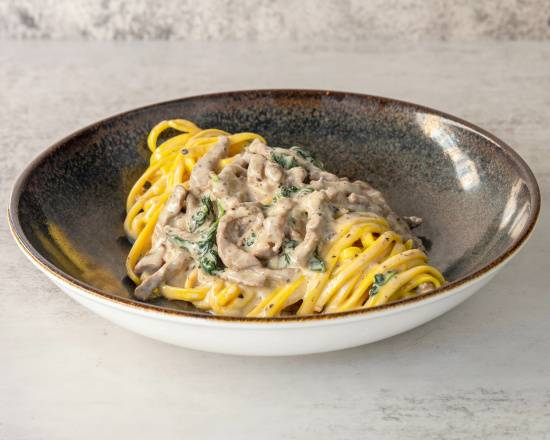

Om oss
Vi är ett erfaret och sammansvetsat team från Italiens olika regioner. Vår ambition är att tillreda rätter med autentiska smaker som kännetecknar det genuina persiska köket. Autenticitet och smakkaraktär har varit ledorden när vi har utformat vår meny. Genom att kombinera den unika matkulturen med en varm och välfungerande service vill vi på Restaurang Milano bjuda våra gäster på oförglömliga, inspirerande och avkopplande möten människor och mat emellan.
En spännande smakupplevelse
Det italienska köket erbjuder en betydande variation av kulinariska rätter i ständig utveckling, tack vare dess mångtusenåriga arv. Endast det bästa är gott nog, vare sig det gäller kött, grönsaker eller annat tillbehör. Råvaror och ingredienser av högsta kvalitet ligger till grund för vår goda mat. Njut och återförenas med smakkombinationer i dess enkelhet och fräschör i vårt italienska kök.